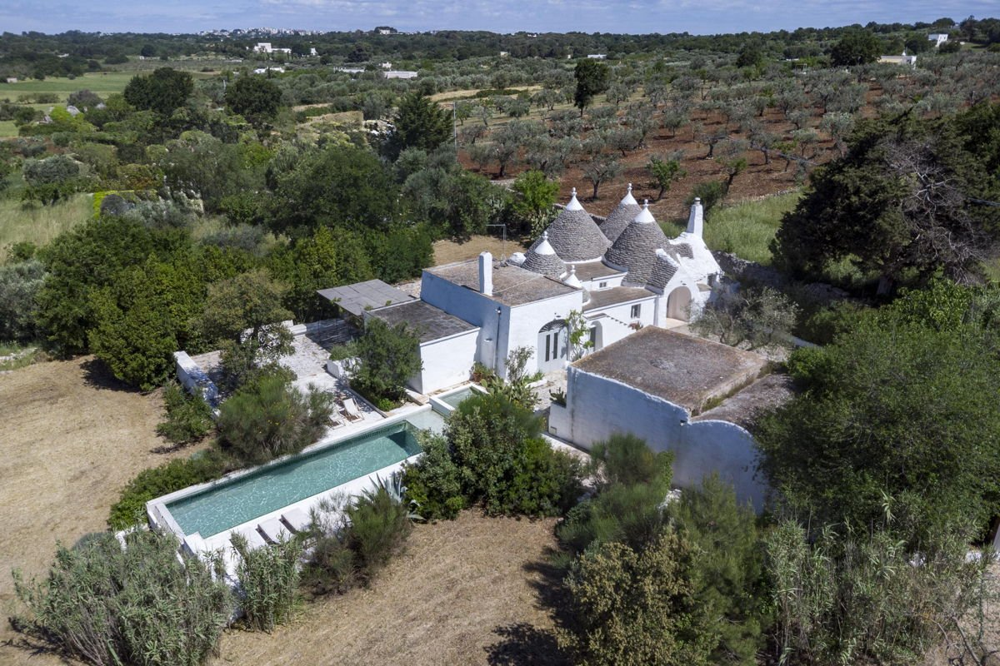
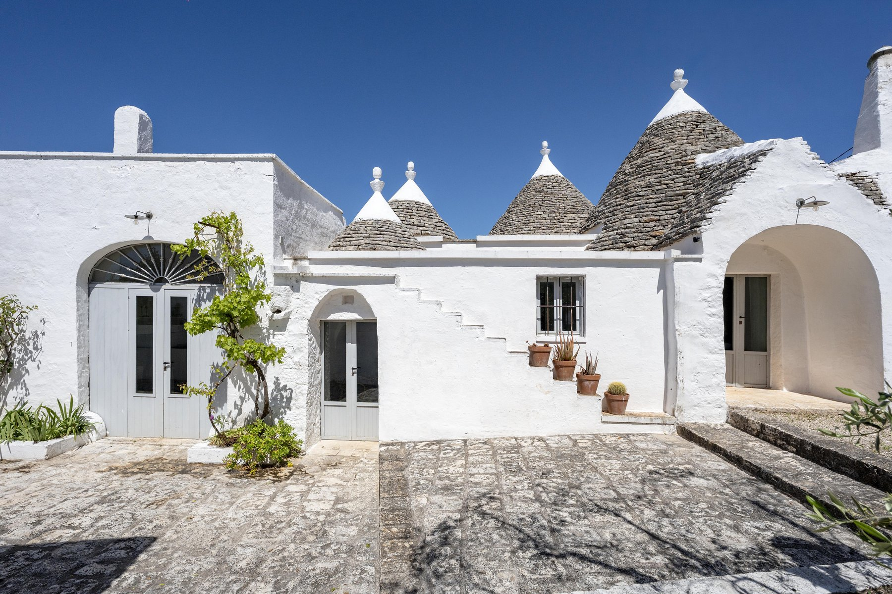
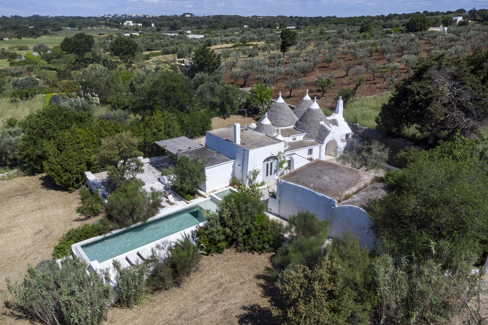
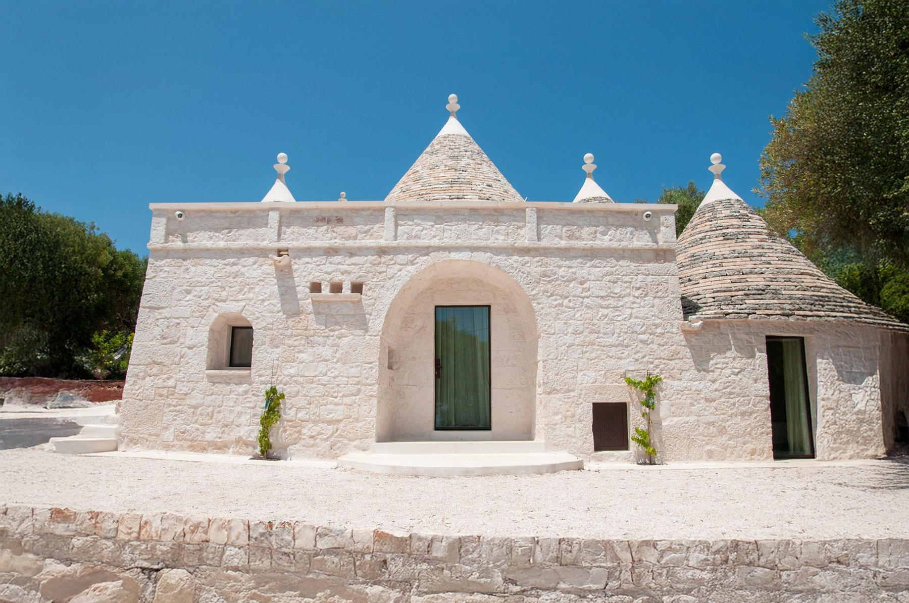
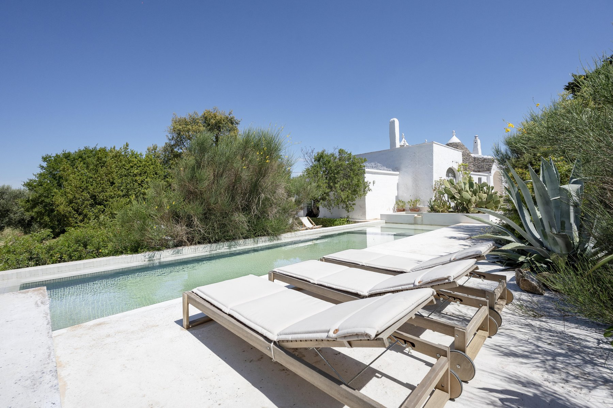
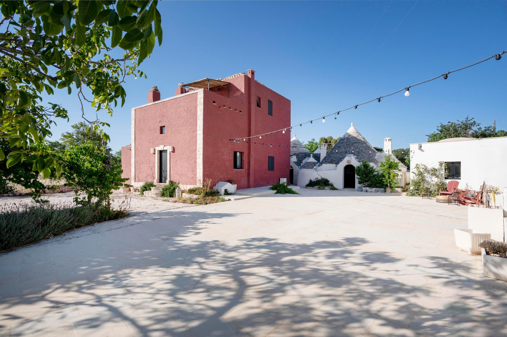
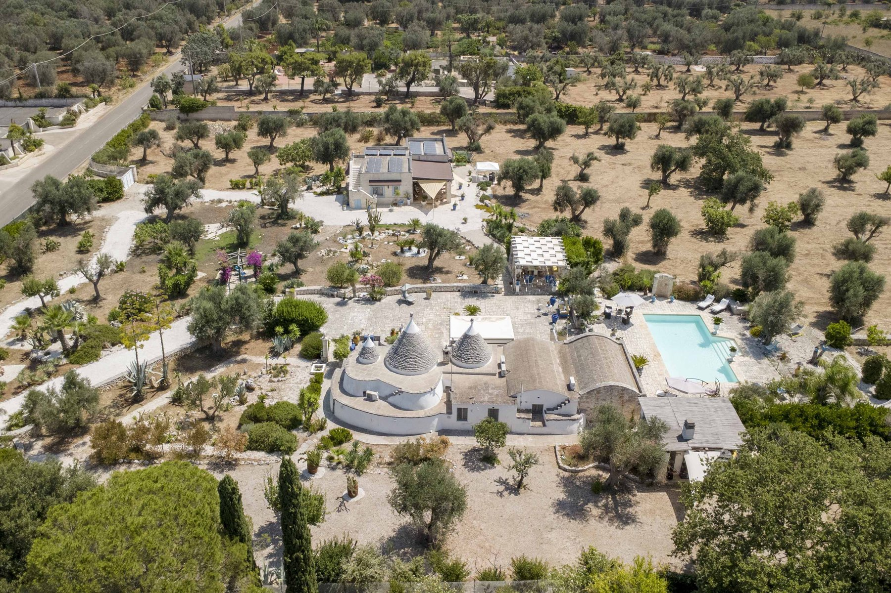

€875.000
Ostuni countryside toward Cisternino · Valle d'Itria, Puglia
Vaulted living, original chianche, recovered-wood loft, traditional kitchen, pool aimed at the valley, pergola and masonry seats. Heat-pump A/C, CCTV, Starlink. Ready main house; extra volume to restore is optional, not required.
Opened 28 Aug 2026. Schema Offer €875000. Official 2 beds (living room can be a third) / 2 baths / ~269 m² / ~17,300 m². Further unrestored volume + ~150 m² extra build rights optional — main nucleo is the habitable bit. No outbound agency button — Instagram blocks those hops.





